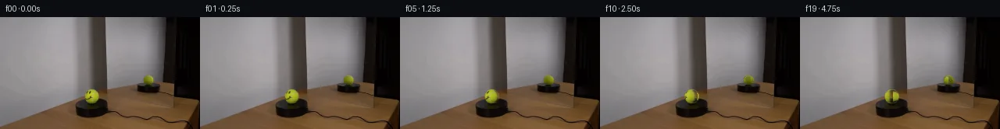

![首帧]()

Round 00
2026-11-05T04:42:35.919740+00:00像素候选变化代码 +208/−0inspection 更新
pixels fa034aaf9c2f9527 · code c8ed323467b4dc85
查看本轮 generate.py 真实 diff
--- previous/generate.py
+++ current/generate.py
@@ -0,0 +1,208 @@
+#!/usr/bin/env python3
+"""Generate a locked-shot tennis-ball rotation from the supplied first frame.
+
+Only local pixel operations are used. The camera plate is never moved. The
+two ball surfaces are inverse-mapped as spheres around the vertical axis.
+"""
+
+from pathlib import Path
+import math
+
+import numpy as np
+from PIL import Image, ImageDraw, ImageFont
+
+import artifact_io
+
+
+ROOT = Path(__file__).resolve().parent
+SOURCE = np.asarray(Image.open(ROOT / "first_frame.png").convert("RGB"), dtype=np.uint8)
+assert SOURCE.shape == (144, 256, 3)
+
+
+def bilinear(image, x, y):
+ """Bilinear RGB sample with coordinates clipped to the image."""
+ h, w = image.shape[:2]
+ x = float(np.clip(x, 0, w - 1))
+ y = float(np.clip(y, 0, h - 1))
+ x0, y0 = int(math.floor(x)), int(math.floor(y))
+ x1, y1 = min(x0 + 1, w - 1), min(y0 + 1, h - 1)
+ fx, fy = x - x0, y - y0
+ top = image[y0, x0].astype(np.float64) * (1.0 - fx) + image[y0, x1] * fx
+ bot = image[y1, x0].astype(np.float64) * (1.0 - fx) + image[y1, x1] * fx
+ return top * (1.0 - fy) + bot * fy
+
+
+def smooth_edge(q, inner=0.82, outer=1.03):
+ """Soft mask that leaves the photographed silhouette/edge antialiasing intact."""
+ if q <= inner:
+ return 1.0
+ if q >= outer:
+ return 0.0
+ s = (outer - q) / (outer - inner)
+ return s * s * (3.0 - 2.0 * s)
+
+
+def warp_sphere(frame, theta, cx, cy, rx, ry, mirror=False):
+ """Rotate photographed sphere pixels about a vertical axis.
+
+ `theta` is the apparent turn at the view. In a plane mirror the apparent
+ horizontal direction reverses, hence the sign change at the call site.
+ """
+ out = frame.astype(np.float64)
+ xmin = int(math.floor(cx - rx - 1))
+ xmax = int(math.ceil(cx + rx + 1))
+ ymin = int(math.floor(cy - ry - 1))
+ ymax = int(math.ceil(cy + ry + 1))
+ ct, st = math.cos(theta), math.sin(theta)
+
+ for y in range(ymin, ymax + 1):
+ v = (y - cy) / ry
+ for x in range(xmin, xmax + 1):
+ u = (x - cx) / rx
+ q2 = u * u + v * v
+ if q2 >= 1.08:
+ continue
+ alpha = smooth_edge(math.sqrt(q2))
+ if alpha <= 0.0:
+ continue
+ z = math.sqrt(max(0.0, 1.0 - min(q2, 1.0)))
+
+ # target normal = Ry(theta) * source normal
+ source_u = ct * u - st * z
+ source_z = st * u + ct * z
+ if source_z > 0.0 and abs(source_u) <= 1.0:
+ sample = bilinear(SOURCE, cx + rx * source_u, cy + ry * v)
+ else:
+ # Newly revealed back-side sliver: retain local photographed
+ # illumination, but remove any old front marking by borrowing
+ # the same latitude from the unmarked right-hand hemisphere.
+ donor_u = 0.58 + 0.28 * max(-1.0, min(1.0, u))
+ donor_u = max(-0.86, min(0.86, donor_u))
+ sample = bilinear(SOURCE, cx + rx * donor_u, cy + ry * v)
+
+ # Near the silhouette, retain more of the original photographed
+ # edge. The entire non-ball scene therefore stays bit-stable.
+ out[y, x] = out[y, x] * (1.0 - alpha) + sample * alpha
+
+ return np.clip(np.rint(out), 0, 255).astype(np.uint8)
… diff truncated; 121 more lines …